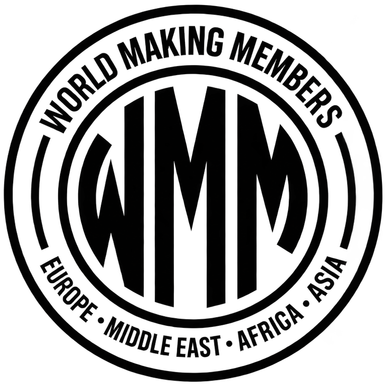

지원자금·정책금융
지원금·융자·보증·R&D를 구분하고 자금 조건과 자기부담금을 확인합니다.
기업마당 원문 ↗
WORLD MAKING MEMBERS / BUSINESS RADAR정부지원·정책금융·R&D·조달·수출 정보를 지역별로 탐색합니다. 무료 Google 로그인 후 검색할 수 있습니다. 현재 제공되는 2026-11-05 저장본은 과거 자료이며, 실시간 연결은 대기 중입니다.
Gmail 메일함, 연락처 및 Google Drive에는 접근하지 않습니다. 추가 유료결제 없이 로그인할 수 있습니다.
팝업이 막히면 전체 화면에서 열기 ↗ 최근 공식 지원사업 보기 ↗정부 지원·정책금융·공공조달·수출 기회를 하나의 레이더에서 탐색합니다.
표시되는 건수는 이 화면에 수집된 자료 기준이며, 신청 조건은 반드시 원문을 확인해야 합니다.
17개 시·도 · 산업별 필터 · 공식 공고 원문 · 브이월드 무료 위성지도 설정 전에는 대체 지도를 표시합니다.
관심 지역·산업을 선택하면 해당 공고와 필요 준비사항을 보여줍니다.
사업자 자격사업장 소재지 · 설립일 · 업종 · 매출 · 직원 수
자금의 성격보조금 · 융자 · 매칭비 · 현물부담 구분
신청 조건접수기간 · 필수 증빙 · 제외 업종 확인
실제 행동공식 원문 열기 · 체크리스트 · 상담/신청
공식 확인된 제한적 공고 목록입니다. 전체 지원사업의 수량이 아니며, 모집 기간과 조건은 반드시 원문을 확인하세요.
검색결과를 불러오는 중입니다.
시장 수요부터 판매·인증·사람·계약까지, 다음 행동으로 연결하는 공공·공식 정보 경로입니다.
지원금·융자·보증·R&D를 구분하고 자금 조건과 자기부담금을 확인합니다.
기업마당 원문 ↗정부·공공 수요, 입찰·발주 공고, 판로 지원사업과 신규 고객을 찾습니다.
나라장터 원문 ↗국가별 시장진입, 수출지원, 해외 규격·인증 및 바이어 검증 자료를 확인합니다.
KOTRA 원문 ↗예비·초기·도약 단계별 창업사업 공고, 멘토링, 보육·사업화 자금을 찾습니다.
K-Startup 원문 ↗업종별 인증·안전·법적 기준과 선행 비용을 확인해 실행 불가능한 사업을 걸러냅니다.
정부24 원문 ↗공고 실행에 필요한 연구기관·협력기업·채용지원·전문인력을 준비합니다.
고용24 원문 ↗사업자 자격 검증 → 적합 공고 선정 → 사업계획 초안 → 제출서류 점검 → 파트너 발굴 → 실행·성과 관리
73036396@naver.com · 통신판매업신고 제2024-서울서초-2185호